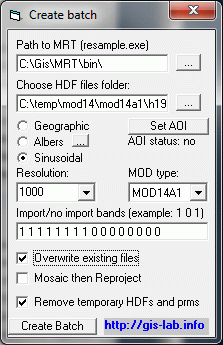
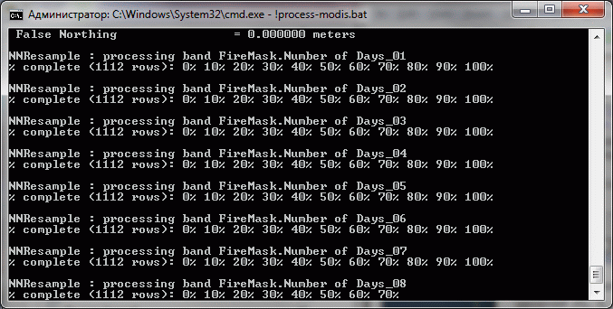
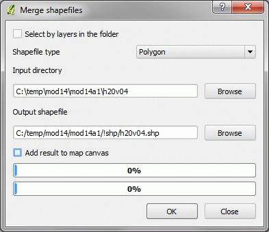
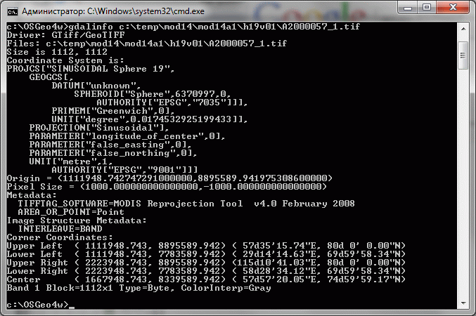
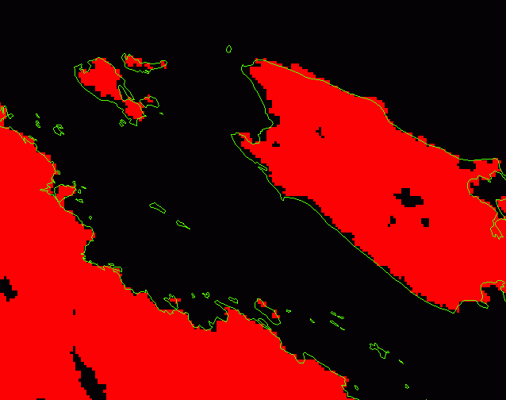

Получение, конвертация, склейка и перепроецирование данных.
Эта статья описывает процесс подготовки к работе данных MOD14A1 (подробнее про эти данные). Исходно эти данные распространяются в HDF, который нельзя назвать удобным форматом для работы. Статья является синтезом других статей уже размещенных на нашем ресурсе, мы постараемся не дублировать информацию из них, а дать ссылки. Обратите внимание, что вам может быть не нужно осуществлять импорт именно в shape-формат, это зависит от того, что вам нужно сделать с данными в дальнейшем.
Некоторое ПО использованное в этой статье не является свободно доступным. Многие этапы можно реализовать по другому. Исправления к процессу аналогичные по скорости и удобству всячески приветствуются.
Оглавление
Для начала работы необходимо получить фрагменты (тайлы) MODIS на вашу территорию и временной промежуток. Данные в исходном формате HDF можно скачать здесь.
Подробно использование Modis Reprojection Tool (MRT) описано в статье: Импорт продуктов MODIS уровней 2G, 3, 4 с помощью MRT" (прочитать статью).
Если используется MODIS Import Tool (прочитать описание), то настройки программы должны быть следующими:
Проекция: Sinusoidal, исходные данные MOD14A1 хранятся именно в этой проекции и конвертация в нее, а не в более удобную сэкономит время на перепроецирование. В любом случае, перепроецировать в нужную проекцию удобнее будет окончательный векторный слой.
Разрешение: 1000 метров, исходное разрешение MOD14A1
Import/no import bands: первые 8 - единицы, остальные 0. Нам нужно импортировать только данные за 8 дней (допустим каналы с Quality Assessment пока не нужны, если нужны, то и их делаем 1).
Mosaic then Reproject: установите, если у вас несколько фрагментов (подробнее см. описание работы с MRT).

Нажимаем Create Batch и дожидаемся сообщения об успешном окончании работы. После этого запускаем !process-bands.bat и дожидаемся окончания процесса импорта. Нормальный процесс импорта выглядит следующим образом:

Количество отдельных растров генерируемых при импорте данных с 2000 по 2010 год составляет около 3950 растров.
Результатом предыдущего этапа является много растровых файлов в формате GeoTIFF. Если вам нужны именно растры, на этом можно остановиться. Если нет, конвертируем данные в вектор.
Так как это требуется нашему конвертеру в вектор, сначала переименовываем все растры так, чтобы имена стали покороче, например по шаблону: [N9-16]_[N72]. Таким образом из названия MOD14A1.A2000065.H19V01.005.2006270190019_res.FireMask.Number_of_Days_04.tif, мы получим более лаконичное: A2000065_b4.tif
Примечание: иногда в исходных файлах HDF содержится меньше чем 8 каналов, в этом случае будут импортированы дополнительные каналы не являющиеся пожарными масками (QA, MaxFRP, sample). После окончания процесса конвертации их рекомендуется удалить.
После этого запускаем скрипт для Arcinfo Workstation. Этот скрипт делает следующее:
Подробнее про запуск, содержание и работу с подобными скриптами можно ознакомиться в статье "Пакетный импорт растровых данных в GRID и их обработка с помощью Arcinfo Workstation" (прочитать).
Для пакетного склеивания ежедневных shape-файлов удобно использовать расширение Merge Shapes из QGIS (подробнее про расширение). Склейка в данном случае осуществляется потайлово, но можно склеивать и все вместе.

Результирующие shape-файлы может понадобится перепроецировать из синусоидальной проекции в географическую систему координат WGS84. Можно делать это и на этапе импорта в GeoTIFF, но это не рекомендуется, так как займет во много раз больше времени чем перепроецировани уже отфильтрованного вектора.
Система координат растров после работы MRT следующая:

То есть используется Sinusoidal проекция на сфере радиусом 6370997 метров (цифра подтверждается MRT_Users_Manual.doc, стр. 57). В ArcGIS такая сфера соответствует сфере D_Sphere_ARC_INFO из папки Geographic Coordinate Systems\Spheroid based\. Соответственно для векторного файла PRJ файл будет выглядеть следующим образом:
PROJCS["World_Sinusoidal",
GEOGCS["GCS_Sphere_ARC_INFO",
DATUM["D_Sphere_ARC_INFO",
SPHEROID["Sphere_ARC_INFO",6370997.0,0.0]
],
PRIMEM["Greenwich",0.0],
UNIT["Degree",0.0174532925199433]
],
PROJECTION["Sinusoidal"],
PARAMETER["False_Easting",0.0],
PARAMETER["False_Northing",0.0],
PARAMETER["Central_Meridian",0.0],
UNIT["Meter",1.0]
]
Наложение растра только что импортированного MRT и границ субъектов РФ в Lat/Long WGS84 (источник) в ArcGIS (трансформация WGS84 -> Sinusoidal "на лету") приводит к достаточно хорошему соответствию, то есть система координат растра верна:

Для перепроецировании растра или вектора в Lat/Long WGS84 используем:
gdalwarp -s_srs "+proj=sinu +R=6370997.0 +nadgrids=@null +wktext" -t_srs EPSG:4326 A2000057_2.tif A2000057_2_wgs.tif
или
ogr2ogr -s_srs "+proj=sinu +R=6370997.0 +nadgrids=@null +wktext" -t_srs EPSG:4326 h19v02_wgs.shp h19v02.shp
Стоит повторить, что это лишь один из возможных путей импорта данных в векторных формат, однако он работает.
Дата создания: 21.03.2011
Автор(ы): Максим Дубинин